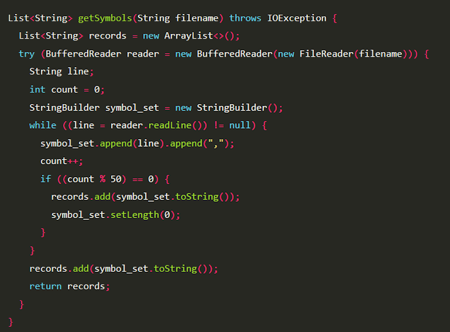

Работа над языком Java началась в 1991 году командой инженеров компании Sun Microsystems. Изначально проект назывался «Oak» (Дуб) и предназначался для бытовой электроники (телевизоров, приставок). Однако индустрия развивалась не так, как ожидалось, и проект чуть не был закрыт.
В 1995 году компания решила переориентировать язык на зарождающуюся сеть Интернет. Тогда же Oak переименовали в Java (в честь сорта кофе). Главной фишкой языка стала философия «Написано один раз — работает везде» благодаря виртуальной машине Java (JVM).
Отцом-основателем языка считается Джеймс Гослинг. В 2010 году компанию Sun Microsystems купила корпорация Oracle, которая до сих пор владеет правами на Java и развивает её. Сегодня Java — один из самых популярных языков в мире.
Java — это строго типизированный объектно-ориентированный язык программирования общего назначения. Он используется для создания серверных приложений, мобильных приложений под Android, игр и корпоративных систем.

| Версия | Год выпуска | Главная особенность |
|---|---|---|
| Java 1.0 | 1996 | Первый официальный релиз |
| Java 8 | 2014 | Появление лямбда-выражений |
| Java 17 | 2021 | Долгосрочная поддержка (LTS) |
.java)..class).Классический пример программы «Hello, World!» на Java выглядит так:
public class HelloWorld {
public static void main(String[] args) {
// Выводим текст на экран
System.out.println("Hello, World!");
}
}Также можно использовать циклы. Пример цикла for:
for (int i = 0; i < 5; i++) {
System.out.println("Итерация: " + i);
}Подробнее с документацией можно ознакомиться на странице Java в Википедии.